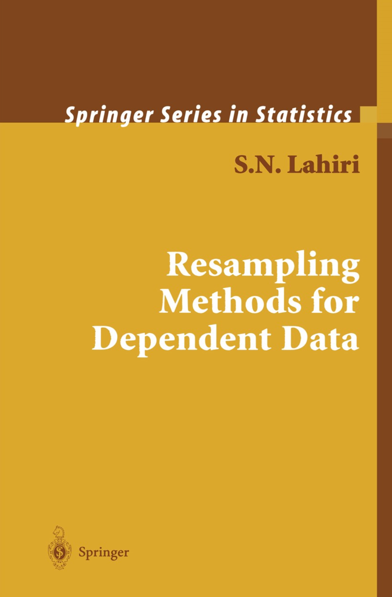

How do you compute probabilistic forecasts from the AR(1)?
Lecture 3
John Zito
Duke University
STA 542 Fall 2025
Recap
The simplest non-trivial time series model
The autoregression of order 1, or AR(1):
\[ \begin{aligned} y_t &= \beta_0 + \beta_1 y_{t-1} + \varepsilon_t, \quad \varepsilon_t\iid\text{N}(0\com\sigma^2) \\ y_0 &\sim \text{N}(\mu_0\com \initvar), \end{aligned} \]
This implies a joint distribution governed by a finite set of static parameters \(\Btheta = \begin{bmatrix}\beta_0&\beta_1&\sigma^2\end{bmatrix}^\tr\):
\[ \begin{aligned} p(y_{0:T}\given \Btheta) &= p(y_0) \prod_{t=1}^T p(y_t\given y_{t-1}\com\Btheta). \end{aligned} \]
Viewed as a function of \(\Btheta\), that’s a likelihood!
The AR(1) joint distribution
Joint distribution:
\[ \begin{bmatrix} y_0 & y_1 & \cdots & y_T \end{bmatrix}^\tr \sim\text{N}_{T+1}\left(\Bmu\com \BSigma\right). \]
Moments:
\[ \begin{aligned} E(y_t) &= \beta_0\sum\limits_{i=0}^{t-1}\beta_1^i + \beta_1^t\mu_0 \\ \var(y_t) &= \sigma^2 \sum\limits_{i=0}^{t-1}\beta_1^{2i}+ \beta_1^{2t}\initvar \\ \cov(y_t\com y_s) &= \begin{cases} \beta_1^{s-t}\var(y_t) & t\leq s\\ \beta_1^{t-s}\var(y_s) & s < t. \end{cases} . \end{aligned} \]
The special case when \(|\beta_1|<1\)
The mean and variance are time-invariant, and the covariance structure is shift-invariant:
\[ \begin{aligned} E(y_t) &= \frac{\beta_0}{1-\beta_1} \\ \var(y_t) &= \frac{\sigma^2}{1-\beta_1^2} \\ \gamma(h) &= \cov(y_{t+h}\com y_t) = \beta_1^{h}\frac{\sigma^2}{1-\beta_1^2}. \end{aligned} \]
The common marginal shared by all \(y_t\) is called the stationary distribution:
\[ y_t\sim\text{N}\left(\frac{\beta_0}{1-\beta_1}\com \frac{\sigma^2}{1-\beta_1^2}\right). \]
So “did: dependent but identically distributed.”
Method of moments
The Yule-Walker estimators are
\[ \begin{aligned} \hat{\beta}_1&=\frac{\hat{\gamma}_T(1)}{\hat{\gamma}_T(0)} \\ \hat{\beta}_0&=(1-\hat{\beta}_1)\hat{\mu}_T\\ \hat{\sigma^2_T}&=(1-\hat{\beta}_1^2)\hat{\gamma}_T(0), \end{aligned} \]
where \(\hat{\mu}_T\), \(\hat{\gamma}_T(0)\), and \(\hat{\gamma}_T(1)\) are simple sample averages.
These have good statistical properties, but only if the true process is stationary.
Likelihood-based inference
In practice it is easiest to work with the conditional likelihood:
\[ p(y_{1:T}\given y_0\com \Btheta) = \prod_{t=1}^T p(y_t\given y_{t-1}\com\Btheta). \]
Classical route:
\[ \hat{\Btheta}_T=\argmax{\Btheta}\,p(y_{1:T}\given y_0\com \Btheta). \]
Bayesian route:
\[ p(\Btheta\given y_{0:T}) = \frac{p(y_{1:T}\given y_0\com \Btheta)p(\Btheta)}{p(y_{1:T}\given y_0)} . \]
Either way, everything you know about inference for iid regression goes through unmodified.
Maximum likelihood
It’s just ordinary least squares (OLS):
\[ \begin{aligned} \By_T &= \begin{bmatrix}y_1&y_2 & \cdots & y_T\end{bmatrix}^\tr \\ \BX_T &= \begin{bmatrix} 1 & 1 & \cdots & 1 \\ y_0 & y_1 & \cdots & y_{T-1} \end{bmatrix}^\tr \\ \Bbeta &= \begin{bmatrix}\beta_0&\beta_1\end{bmatrix}^\tr \\ \\ \hat{\Bbeta}_T &= (\BX_T^\tr\BX_T)^{-1}\BX_T^\tr\By_T \\ \hat{\sigma^2_T} &= ||\By_T-\BX_T\hat{\Bbeta}_T||_2^2 / T. \end{aligned} \]
Things can get weird, but we have asymptotic theory for this regardless whether or not things are stationary.
Recursive version
If the data are streaming, we have some bad ass rank-1 updates:
\[ \begin{aligned} \hat{\Bbeta}_t &= \hat{\Bbeta}_{t-1} + \Bk_t(y_t-\Bx_t^\tr\hat{\Bbeta}_{t-1}) \\ \Bk_t &= \frac{\BP_{t-1}\Bx_t} {1+\Bx_t^\tr\BP_{t-1}\Bx_t} \\ \BP_t &= (\BX_t^\tr\BX_t)^{-1} \\ &= (\BX_{t-1}^\tr\BX_{t-1}+\Bx_t\Bx_t^\tr)^{-1} \\ &= (\BP_{t-1}+\Bx_t\Bx_t^\tr)^{-1} \\ &= \BP_{t-1} - \Bk_t \Bx_t^\tr\BP_{t-1} . \end{aligned} \]
Thanks Sherman-Morrison!
Conjugate Bayes
Take a conjugate normal-inverse-gamma prior:
\[ \begin{aligned} \sigma^2 &\sim \text{IG}(a_0\com b_0) \\ \Bbeta\given \sigma^2 &\sim \text{N}_2(\Bm_0\com\sigma^2\BH^{-1}_0) \\ y_t \given y_{t-1} \com \Bbeta\com\sigma^2 &\sim \text{N} \left( \Bx_t^\tr\Bbeta\com\sigma^2 \right), && \Bx_t=\begin{bmatrix}1 & y_{t-1}\end{bmatrix}^\tr. \end{aligned} \]
The posterior is available in closed-form:
\[ \begin{aligned} \sigma^2\given y_{0:T} &\sim \text{IG}(a_T\com b_T) \\ \Bbeta\given \sigma^2\com y_{0:T} &\sim \text{N}_2(\Bm_T\com\sigma^2\BH^{-1}_T) \\ \\ \BH_T &= \BX_T^\tr\BX_T+\BH_0 \\ \Bm_T &= \BH_T^{-1}(\BX_T^\tr\By_T+\BH_0\Bm_0) \\ a_T &= a_0 + T/2 \\ b_T &= b_0 + (\By_T^\tr\By_T+\Bm_0^\tr\BH_0\Bm_0-\Bm_T^\tr\BH_T\Bm_T)/2. \end{aligned} \]
Make it recursive on Problem Set 1!
Probabilistic forecasting
A classic example

Point forecast
Your single-number best guess at tomorrow’s observation:
Forecast interval
A range of likely values for tomorrow’s observation:

Forecast density
Full distribution capturing uncertainty about tomorrow:

And then tomorrow finally comes
So…how’d we do?

This is what we will talk about this week.
What’s the point?
We want intervals and densities to communicate uncertainty about the forecast;
-
What sources of uncertainty?
- Basic data uncertainty;
- Parameter estimation uncertainty;
- Hyperparameter uncertainty;
- Model uncertainty;
- Uncertainty introduced by missing data.
In the small world of the AR(1), mainly the first two for now.
A classical approach
Forecast distribution
Given the data we’ve seen, we want a distribution for the data we haven’t seen.
In other words:
\[ p(y_{t+1:t+H}\given y_{0:t}) \]
Assume for now the parameters are fixed and known (red flag!).
Clumsy, but true
We know
\[ \begin{bmatrix} \mathbf{y}_t \\ \mathbf{y}_{t+H} \end{bmatrix} \sim \text{N}_{1+t+H} \left( \begin{bmatrix} \boldsymbol{\mu}_t \\ \boldsymbol{\mu}_{t+H} \end{bmatrix} ,\, \begin{bmatrix} \boldsymbol{\Sigma}_t & \boldsymbol{\Sigma}_{t,t+H}\\ \boldsymbol{\Sigma}_{t,t+H}^{\scriptscriptstyle\mathsf{T}} & \boldsymbol{\Sigma}_{t+H} \end{bmatrix} \right), \]
and so strictly speaking:
\[ \mathbf{y}_{t+H} \,|\,\mathbf{y}_t \sim \text{N}_H \left( \boldsymbol{\mu}_{t+H} + \boldsymbol{\Sigma}_{t,t+H}^{\scriptscriptstyle\mathsf{T}}\boldsymbol{\Sigma}_t^{-1}(\mathbf{y}_t-\boldsymbol{\mu}_t) ,\, \boldsymbol{\Sigma}_{t+H} - \boldsymbol{\Sigma}_{t,t+H}^{\scriptscriptstyle\mathsf{T}} \boldsymbol{\Sigma}_t^{-1} \boldsymbol{\Sigma}_{t,t+H} \right). \]
But let’s make this…useful.
(Also, ignore all this ridiculous notation)
Let’s give it some thought
First, the AR(1) is first order Markov, so
\[ p(y_{t+1:t+H}\given y_{0:t})=p(y_{t+1:t+H}\given y_{t}). \]
The future data behaves just like the past, with a fixed initial condition:
\[ \begin{aligned} y_{t+h} &= \beta_0 + \beta_1 y_{t+h-1} + \varepsilon_{t+h}, \quad \varepsilon_t\iid\text{N}(0\com\sigma^2) \\ y_t &\text{ fixed}. \end{aligned} \]
So the conditional distribution has the same structure as the unconditional joint that we have already studied. Just starts in a different spot.
Forecast distributions
\[ \begin{aligned} y_{t+h}\given y_{0:t} &\sim\N\left(\mu_{t+h|t}\com \tau^2_{t+h|t}\right) \\ \\ \mu_{t+h|t} &= \beta_0\sum\limits_{i=0}^{h-1}\beta_1^i + \beta_1^hy_t \\ &= \beta_0 + \beta_1 \mu_{t+h-1|t} && \mu_{t|t}=y_t \\ \tau^2_{t+h|t} &= \sigma^2 \sum\limits_{i=0}^{h-1}\beta_1^{2i} \\ &= \sigma^2 + \beta_1^2 \tau^2_{t+h-1|t} && \tau^2_{t|t}=0. \end{aligned} \]
Prediction intervals
Full distribution:
\[ y_{t+h}\given y_{0:t} \sim\N\left(\mu_{t+h|t}\com \tau^2_{t+h|t}\right) \]
Prediction interval:
\[ \begin{aligned} \mu_{t+h-1|t} &\pm z_{1-\frac{\alpha}{2}} \tau_{t+h|t} \\ \beta_0\sum\limits_{i=0}^{h-1}\beta_1^i &\pm z_{1-\frac{\alpha}{2}} \sqrt{\sigma^2 \sum\limits_{i=0}^{h-1}\beta_1^{2i}} \end{aligned} \]
Summary
Distribution forecasts:
\[ \begin{aligned} y_{t+h}\given y_{0:t} &\sim\N\left(\mu_{t+h|t}\com \tau^2_{t+h|t}\right) \\ \\ \mu_{t+h|t} &= \beta_0\sum\limits_{i=0}^{h-1}\beta_1^i + \beta_1^hy_t \\ &= \beta_0 + \beta_1 \mu_{t+h-1|t} && \mu_{t|t}=y_t \\ \tau^2_{t+h|t} &= \sigma^2 \sum\limits_{i=0}^{h-1}\beta_1^{2i} \\ &= \sigma^2 + \beta_1^2 \tau^2_{t+h-1|t} && \tau^2_{t|t}=0. \end{aligned} \]
Prediction intervals:
\[ \mu_{t+h-1|t} \pm z_{1-\frac{\alpha}{2}} \tau_{t+h|t} . \]
Pics or it didn’t happen
#| '!! shinylive warning !!': |
#| shinylive does not work in self-contained HTML documents.
#| Please set `embed-resources: false` in your metadata.
#| standalone: true
#| viewerHeight: 700
library(shiny)
simulate_ar_1 <- function(T, b0, b1, s, y0){
y <- numeric(T)
y[1] <- y0
for(t in 2:T){
y[t] <- b0 + b1 * y[t - 1] + rnorm(1, 0, s)
}
return(y)
}
ar_1_mean <- function(h, b0, b1, yT){
if(h == 0){
return(yT)
} else {
return(b0 * sum(b1 ^ (0:(h-1))) + yT * (b1^h))
}
}
ar_1_var <- function(h, b1, s){
if(h == 0){
return(0)
} else {
return((s^2) * sum(b1 ^ (2*(0:(h-1)))))
}
}
ui <- fluidPage(
titlePanel("Forecast distribution of a Gaussian AR(1)"),
sidebarLayout(
sidebarPanel(
sliderInput("b0", "β₀", min = -5, max = 5, value = 0, step = 0.1),
sliderInput("b1", "β₁", min = -2, max = 2, value = 0, step = 0.1),
sliderInput("s", "σ", min = 0, max = 2, value = 1, step = 0.1)
),
mainPanel(
plotOutput("distPlot", height = "600px")
)
)
)
server <- function(input, output) {
# fixed observed data
set.seed(123)
y_obs <- simulate_ar_1(10, 0, 0, 1, 0)
output$distPlot <- renderPlot({
b0 <- input$b0
b1 <- input$b1
s <- input$s
T_obs <- length(y_obs)
H <- 20 # forecast horizon
range <- 1:(T_obs + H)
# plot window
plot(range, c(y_obs, rep(NA,H)), type="n",
xlab = "t", ylab = expression(y[t]),
ylim = c(-20,20), bty="n")
# grey forecast region
rect(T_obs+0.5, -20, T_obs+H+0.5, 20, col=rgb(0.8,0.8,0.8,0.5), border=NA)
# observed data
lines(1:T_obs, y_obs, col="black", lwd=2)
# forecast distribution intervals
alpha = c(0.01, seq(0.1,0.9,0.1))
middle <- sapply(0:H, ar_1_mean, b0, b1, y_obs[T_obs])
sds <- sqrt(sapply(0:H, ar_1_var, b1, s))
f_range <- T_obs:(T_obs+H)
for(a in alpha){
U = qnorm(1 - a/2, mean = middle, sd = sds)
L = qnorm(a/2, mean = middle, sd = sds)
polygon(c(f_range, rev(f_range)),
c(U, rev(L)),
col = rgb(1,0,0,0.15), border=NA)
}
# add mean forecast line
lines(f_range, middle, col="red", lwd=2, lty=2)
})
}
shinyApp(ui = ui, server = server)But wait!
The parameters are not known. They have to be estimated.
\[ \mu_{t+h-1|t} \pm z_{1-\frac{\alpha}{2}} \tau_{t+h|t} . \]
Can we plug-in estimates and replace \(z\) with \(t\)?
Not quite.
Bootstrapping for dependent data with iid errors
- Data come from an AR(1) with mean zero iid errors (may not be normal!):
\[ y_t = \beta_0 + \beta_1 y_{t-1} + \varepsilon_t, \quad \varepsilon_t \overset{\text{iid}}{\sim}F; \]
- Use observed \(y_{0:T}\) to compute OLS estimate \(\hat{\Bbeta}_T\);
- Estimate residuals and center them:
\[ \hat{\varepsilon}_t=y_t-\hat{\beta}_0-\hat{\beta}_1y_{t-1}\quad \to\quad e_t=\hat{\varepsilon}_t-\sum\limits_{j=1}^T\hat{\varepsilon}_j/T. \]
- Construct alternative time series by resampling residuals:
\[ \begin{aligned} \tilde{y}_0&=y_0\\ \tilde{y}_t&=\hat{\beta}_0+\hat{\beta}_1\tilde{y}_{t-1}+\tilde{e}_{t},&&\tilde{e}_{t}\overset{\text{iid}}{\sim} \hat{F}_T. \end{aligned} \]
Repeats the last step many times, and from then on it’s bootstrap like normal.
Bootstrapping the residuals
Gird your loins:
\[ \begin{matrix} \text{1. Original data} &&& y_{0:n} && \\ &&& \downarrow && \\ \text{2. OLS} &&& \hat{\Btheta}_{T} && \\ &&& \downarrow && \\ \text{3. Estimate (centered) residuals} &&& e_{1:T} && \\ &\swarrow &\swarrow& \cdots &\searrow&\searrow \\ \text{4. Resample residuals}&\tilde{e}_{1:T}^{(1)} &\tilde{e}_{1:T}^{(2)}& \cdots &\tilde{e}_{1:T}^{(k-1)}&\tilde{e}_{1:T}^{(k)} \\ &\downarrow &\downarrow& \cdots &\downarrow&\downarrow \\ \text{5. Bootstrap time series}&\tilde{y}_{0:T}^{(1)} &\tilde{y}_{0:T}^{(2)}& \cdots &\tilde{y}_{0:T}^{(k-1)}&\tilde{y}_{0:T}^{(k)} \\ &\downarrow &\downarrow& \cdots &\downarrow&\downarrow \\ \text{6. Bootstrap estimates}&\tilde{\Btheta}_{T}^{(1)} &\tilde{\Btheta}_{T}^{(2)}& \cdots &\tilde{\Btheta}_{T}^{(k-1)}&\tilde{\Btheta}_{T}^{(k)} \\ &\downarrow &\downarrow& \cdots &\downarrow&\downarrow \\ \text{7. Draw more residuals}&\tilde{e}_{t+1:t+h}^{(1)} &\tilde{e}_{t+1:t+h}^{(2)}& \cdots &\tilde{e}_{t+1:t+h}^{(k-1)}&\tilde{e}_{t+1:t+h}^{(k)} \\ &\downarrow &\downarrow& \cdots &\downarrow&\downarrow \\ \text{8. Simulate forecasts}&\tilde{y}_{t+1:t+h}^{(1)} &\tilde{y}_{t+1:t+h}^{(2)}& \cdots &\tilde{y}_{t+1:t+h}^{(k-1)}&\tilde{y}_{t+1:t+h}^{(k)} \\ \end{matrix} \]
In other words, it’s awful.
Probabilistic forecasting via Monte Carlo
Use the simulations \(\tilde{y}_{t+h}^{(1:k)}=\left\{\tilde{y}_{t+h}^{(1)}\com \tilde{y}_{t+h}^{(2)}\com ...\com \tilde{y}_{t+h}^{(k)}\right\}\) to construct whatever forecast object you want:
\[ \hat{y}_{t+h|t}=\frac{1}{k}\sum\limits_{j=1}^k\tilde{y}_{t+h}^{(j)}. \quad (\text{...or median}) \]
Forecast interval:
\[ \hat{I}_{t+h|t} = \left[\hat{Q}_{\frac{\alpha}{2}}\left(\tilde{y}_{t+h}^{(1:k)}\right)\com \hat{Q}_{1-\frac{\alpha}{2}}\left(\tilde{y}_{t+h}^{(1:k)}\right)\right]. \quad (...\text{or hdi}) \]
Forecast distribution:
\[ \hat{f}_{t+h|t} = \text{histogram}\left(\tilde{y}_{t+h}^{(1:k)}\right). \quad (...\text{or kde}) \]
Compare intervals
#| '!! shinylive warning !!': |
#| shinylive does not work in self-contained HTML documents.
#| Please set `embed-resources: false` in your metadata.
#| standalone: true
#| viewerHeight: 700
library(shiny)
ui <- fluidPage(
titlePanel("AR(1) Forecast: Plug-in vs Residual Bootstrap"),
sidebarLayout(
sidebarPanel(
sliderInput("true_b0", "True β₀:", min = -1, max = 1, value = 0.5, step = 0.1),
sliderInput("true_b1", "True β₁:", min = -0.95, max = 0.95, value = 0.7, step = 0.05),
sliderInput("true_sigma", "True σ:", min = 0.1, max = 2, value = 1, step = 0.1),
sliderInput("n_obs", "Sample size:", min = 40, max = 500, value = 100, step = 10),
actionButton("rerun", "Re-run simulation"),
checkboxInput("show_red", "Show plug-in fan (red)", TRUE),
checkboxInput("show_blue", "Show bootstrap fan (blue)", TRUE)
),
mainPanel(
plotOutput("fanPlot", height = "600px")
)
)
)
server <- function(input, output, session) {
simulate_ar_1 <- function(T, b0, b1, s, y1 = 0){
y <- numeric(T)
y[1] <- y1
for(t in 2:T){
y[t] <- b0 + b1 * y[t-1] + rnorm(1, 0, s)
}
return(y)
}
ar_1_mean_h <- function(h, b0, b1, yT){
if(h == 0) return(yT)
b0 * sum(b1^(0:(h-1))) + yT * (b1^h)
}
ar_1_var_h <- function(h, b1, sigma){
if(h == 0) return(0)
sigma^2 * sum(b1^(2*(0:(h-1))))
}
sim_data <- reactiveVal(NULL)
observeEvent(input$rerun, {
set.seed(123) # keep deterministic for reproducibility
n_obs <- input$n_obs
H <- 20
B <- 7500
y_obs <- simulate_ar_1(n_obs, input$true_b0, input$true_b1, input$true_sigma, y1 = 0)
# OLS fit
Y <- y_obs[2:n_obs]
X <- cbind(1, y_obs[1:(n_obs-1)])
ols_fit <- lm(Y ~ X - 1)
coef_hat <- coef(ols_fit)
b0_hat <- coef_hat[1]
b1_hat <- coef_hat[2]
resid_hat <- resid(ols_fit)
sigma_hat <- sqrt(sum(resid_hat^2) / (length(resid_hat) - 1))
h_seq <- 0:H
plug_mean <- sapply(h_seq, ar_1_mean_h, b0 = b0_hat, b1 = b1_hat, yT = y_obs[n_obs])
plug_sd <- sqrt(sapply(h_seq, ar_1_var_h, b1 = b1_hat, sigma = sigma_hat))
# bootstrap
bootstrap_forecasts <- matrix(NA, nrow = B, ncol = H + 1)
resid_centered <- resid_hat - mean(resid_hat)
for(b in 1:B){
e_star <- sample(resid_centered, size = n_obs - 1, replace = TRUE)
y_star <- numeric(n_obs)
y_star[1] <- y_obs[1]
for(t in 2:n_obs){
y_star[t] <- b0_hat + b1_hat * y_star[t-1] + e_star[t-1]
}
Ys <- y_star[2:n_obs]
Xs <- cbind(1, y_star[1:(n_obs-1)])
fit_star <- lm(Ys ~ Xs - 1)
coef_star <- coef(fit_star)
b0_star <- coef_star[1]
b1_star <- coef_star[2]
resid_star <- resid(fit_star)
resid_star_centered <- resid_star - mean(resid_star)
y_fut <- numeric(H + 1)
y_fut[1] <- y_obs[n_obs]
future_shocks <- sample(resid_star_centered, size = H, replace = TRUE)
for(h in 1:H){
y_fut[h + 1] <- b0_star + b1_star * y_fut[h] + future_shocks[h]
}
bootstrap_forecasts[b, ] <- y_fut
}
boot_mean <- colMeans(bootstrap_forecasts)
sim_data(list(
y_obs = y_obs,
plug_mean = plug_mean,
plug_sd = plug_sd,
bootstrap_forecasts = bootstrap_forecasts,
boot_mean = boot_mean,
H = H
))
}, ignoreNULL = FALSE)
output$fanPlot <- renderPlot({
dat <- sim_data()
if(is.null(dat)) return(NULL)
y_obs <- dat$y_obs
plug_mean <- dat$plug_mean
plug_sd <- dat$plug_sd
bootstrap_forecasts <- dat$bootstrap_forecasts
boot_mean <- dat$boot_mean
H <- dat$H
n_obs <- length(y_obs)
# Window: last 20 obs and 20 forecasts
obs_window <- (n_obs-19):n_obs
f_range <- (n_obs):(n_obs + H)
plot_range <- c((n_obs-19):(n_obs+H))
y_min <- min(c(y_obs[obs_window], plug_mean - 4 * plug_sd, bootstrap_forecasts))
y_max <- max(c(y_obs[obs_window], plug_mean + 4 * plug_sd, bootstrap_forecasts))
plot(plot_range, rep(NA, length(plot_range)), type = "n",
xlab = "t", ylab = expression(y[t]),
ylim = c(y_min, y_max), bty = "n",
main = "AR(1) forecast: plug-in (red) vs residual-bootstrap (blue)")
rect(n_obs + 0.5, y_min, n_obs + H + 0.5, y_max,
col = rgb(0.85,0.85,0.85,0.5), border = NA)
lines(obs_window, y_obs[obs_window], col = "black", lwd = 2)
# bootstrap fan
if(input$show_blue){
prob_levels <- c(0.001, 0.005, 0.01, seq(0.02, 0.48, by = 0.02))
lower_probs <- prob_levels
upper_probs <- 1 - prob_levels
boot_fan_lower <- apply(bootstrap_forecasts, 2, quantile, probs = lower_probs)
boot_fan_upper <- apply(bootstrap_forecasts, 2, quantile, probs = upper_probs)
for(i in seq_len(nrow(boot_fan_lower))){
polygon(c(f_range, rev(f_range)),
c(boot_fan_upper[i, ], rev(boot_fan_lower[i, ])),
col = rgb(0,0,1,0.08), border = NA)
}
lines(f_range, apply(bootstrap_forecasts, 2, median),
col = rgb(0,0,1,0.8), lty = 2, lwd = 1.5)
lines(f_range, boot_mean, col = rgb(0,0,1,0.9), lty = 1, lwd = 1)
}
# plug-in fan
if(input$show_red){
alpha_vec <- c(0.01, seq(0.1,0.9,by=0.1))
for(a in rev(alpha_vec)){
U <- qnorm(1 - a/2, mean = plug_mean, sd = plug_sd)
L <- qnorm(a/2, mean = plug_mean, sd = plug_sd)
polygon(c(f_range, rev(f_range)),
c(U, rev(L)),
col = rgb(1, 0, 0, 0.15), border = NA)
}
lines(f_range, plug_mean, col = "red", lty = 2, lwd = 2)
}
abline(v = n_obs + 0.5, lty = 3)
})
}
shinyApp(ui, server)That’s just the tip of the iceberg

If you really want to know,
Lahiri is your man.
A Bayesian approach
Posterior predictive distribution
After computing the posterior
\[ p(\Btheta\given y_{0:T}) = \frac{p(y_{1:T}\given y_0\com \Btheta)p(\Btheta)}{p(y_{1:T}\given y_0)} , \]
you base forecasts on the posterior predictive distribution:
\[ p(y_{T+1:T+H}\,|\,y_{1:T}) = \int p(y_{T+1:T+H}\,|\,y_{1:T},\,\boldsymbol{\theta}) p(\boldsymbol{\theta}\,|\,y_{1:T}) \,\text{d}\boldsymbol{\theta}. \]
Immediately incorporates both data and parameter uncertainty by construction.
There’s…nothing else to say about this.
Probabilistic prediction is a natural byproduct of a Bayesian approach
It falls out basically for free:
“Prediction of the value of an unobserved or future random variable is a fundamental problem in statistics. From a Bayesian point of view, it is solved in a straightforward manner by finding the posterior predictive density of the unobserved random variable given the data. If one does not want to pay the Bayesian price of having to determine a prior, no unifying basis for prediction has existed until recently.”
It’s a price I’m willing to pay, dude.
In general, just simulate
Simulate the posterior somehow (iid, MCMC, HMC, SMC, whatever), and then for each draw, simulate the model forward:
\[ \begin{aligned} \Btheta^{(j)} &\sim p(\boldsymbol{\theta}\,|\,y_{0:T})\\ \tilde{y}^{(j)}_{T+1:T+H} &\sim p(y_{T+1:T+H}\,|\,y_{0:T},\,\Btheta^{(j)}), &&j = 1\com 2\com ...\com k. \end{aligned} \]
The retained sample \(\tilde{y}^{(1:k)}_{T+1:T+H}\) is drawn from the posterior predictive.
Same slide as before
Use the simulations \(\tilde{y}_{t+h}^{(1:k)}=\left\{\tilde{y}_{t+h}^{(1)}\com \tilde{y}_{t+h}^{(2)}\com ...\com \tilde{y}_{t+h}^{(k)}\right\}\) to construct whatever forecast object you want:
\[ \hat{y}_{t+h|t}=\frac{1}{k}\sum\limits_{j=1}^k\tilde{y}_{t+h}^{(j)}. \quad (\text{...or median}) \]
Forecast interval:
\[ \hat{I}_{t+h|t} = \left[\hat{Q}_{\frac{\alpha}{2}}\left(\tilde{y}_{t+h}^{(1:k)}\right)\com \hat{Q}_{\frac{1-\alpha}{2}}\left(\tilde{y}_{t+h}^{(1:k)}\right)\right]. \quad (...\text{or hdi}) \]
Forecast distribution:
\[ \hat{f}_{t+h|t} = \text{histogram}\left(\tilde{y}_{t+h}^{(1:k)}\right). \quad (...\text{or kde}) \]
One-step-ahead in the conjugate case
We want
\[ p(y_{t+1}\given y_{0:t}) = \int \int p(y_{t+1}\given\Bbeta\com\sigma^2\com y_{0:t})p(\Bbeta\com\sigma^2\given y_{0:t})\,\dd\Bbeta\,\dd\sigma^2 , \]
and we know that
\[ \begin{aligned} \sigma^2\given y_{0:t} &\sim \text{IG}(a_t\com b_t) \\ \Bbeta\given \sigma^2\com y_{0:t} &\sim \text{N}_2(\Bm_t\com\sigma^2\BH^{-1}_t) \\ y_{t+1}\given\Bbeta\com \sigma^2\com y_{0:t} &\sim \N(\Bx_{t+1}^\tr\Bbeta\com\sigma^2). \end{aligned} \]
There is actually a closed-form solution.
Marginalize out \(\Bbeta\)
We know that
\[ \begin{aligned} \Bbeta\given \sigma^2\com y_{0:t} &\sim \text{N}_2(\Bm_t\com\sigma^2\BH^{-1}_t) \\ y_{t+1} &= \Bx_{t+1}^\tr\Bbeta + \varepsilon_{t+1} , && \varepsilon_{t+1}\sim\N(0\com \sigma^2). \end{aligned} \]
By affine transformation:
\[ \Bx_{t+1}^\tr\Bbeta \given \sigma^2\com y_{0:t} \sim \N( \Bx_{t+1}^\tr\Bm_t \com \sigma^2\Bx_{t+1}^\tr\BH_t^{-1}\Bx_{t+1} ). \]
By linear combination of independent normals:
\[ \begin{aligned} y_{t+1}\given \sigma^2\com y_{0:t} &\sim \N\left(\Bx_{t+1}^\tr\Bm_t\com\sigma^2(1+\Bx_{t+1}^\tr\BH_t^{-1}\Bx_{t+1})\right). \end{aligned} \]
Marginalize out \(\sigma^2\)
We know that
\[ \begin{aligned} \sigma^2\given y_{0:t} &\sim \text{IG}(a_t\com b_t) \\ y_{t+1}\given \sigma^2\com y_{0:t} &\sim \N\left(\Bx_{t+1}^\tr\Bm_t\com\sigma^2(1+\Bx_{t+1}^\tr\BH_t^{-1}\Bx_{t+1})\right). \end{aligned} \]
Marginalizing \(\sigma^2\) out of this hierarchy is essentially the definition of Student’s \(t\):
\[ \begin{aligned} y_{t+1}\given y_{0:t} &\sim t(\nu_{t+1|t}\com\bar{y}_{t+1|t}\com s_{t+1|t}^2) \\ \\ \nu_{t+1|t} &= 2a_t \\ \bar{y}_{t+1|t} &= \Bx_{t+1}^\tr\Bm_t \\ s_{t+1|t}^2 &= \frac{b_t}{a_t} (1+\Bx_{t+1}^\tr\BH_t^{-1}\Bx_{t+1}) . \end{aligned} \]
So, Student’s \(t\) with location-scale.
One-step-ahead probabilistic prediction
Our density forecast is:
\[ y_{t+1}\given y_{0:t} \sim t(\nu_{t+1|t}\com\bar{y}_{t+1|t}\com s_{t+1|t}^2). \]
This gives a \(100\times(1-\alpha)\%\) credible interval:
\[ \bar{y}_{t+1|t} \pm \underbrace{t_{\nu_{t+1|t}} \left( 1-\frac{\alpha}{2} \right)}_{\text{quantile of }t(\nu_{t+1|t}\com 0\com 1)} s_{t+1|t} . \]
And the moments are
\[ \begin{aligned} E(y_{t+1}\given y_{0:t}) &= \bar{y}_{t+1|t} , && \nu_{t+1|t}>1 \\ \text{var}(y_{t+1}\given y_{0:t}) &= \frac{\nu_{t+1|t}}{\nu_{t+1|t}-2} s_{t+1|t}^2 , && \nu_{t+1|t}>2. \end{aligned} \]
Things to notice
Goal: generate probabilistic predictions incorporating many sources of uncertainty. In the small world of the AR(1), these are mainly uncertainty from parameter estimation and the inherent randomness of future observations.
- Classical approach: pretty unnatural. Can’t do anything analytically. Whole books have been written about how the bootstrapping ought to go;
- Bayesian approach: totally natural. Everything is probabilistic already. Posterior predictive simulation is conceptually straightforward. We can even do the math in a special case.
But in fairness, the Bayes stuff leans hard into normality. The bootstrap stuff less so.